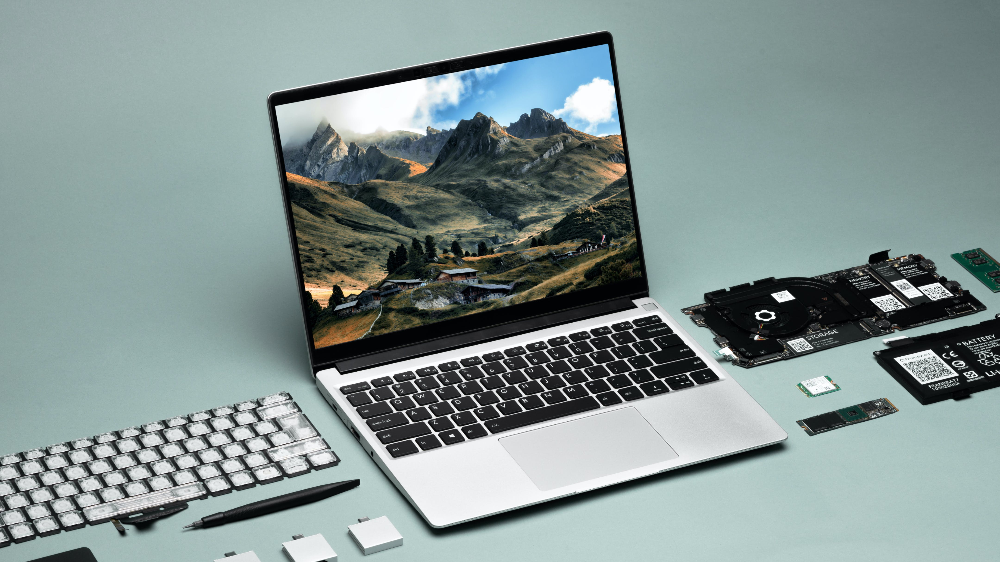

Il primo laptop creato per essere riparato


I laptop non devono essere dispositivi usa e getta, devo essere creati
per durare ed essere facili da riparare.
Scopri quanto è semplice ripararlo

Butta via i tuoi dongle, con questo laptop hai tutte le porte che ti servono.